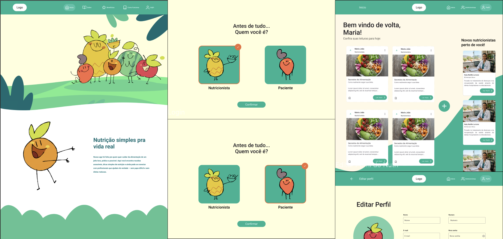

UX/UI · Frontend · Web
Nutra
Conectando pessoas a informações sobre saúde e profissionais de nutrição.

Sobre o projeto
O Nutra foi desenvolvido quando fiz parte da disciplina de Projeto Integrado III, que tinha como objetivo desenvolver um sistema web funcional a partir de uma necessidade real. A proposta foi criar uma plataforma que facilitasse o acesso da população a informações sobre saúde e aproximasse usuários de profissionais da área de nutrição, reunindo esses dois pontos em uma única experiência.
Solução
A solução organiza conteúdos relacionados à saúde e nutrição e oferece um caminho para que os usuários conheçam e encontrem profissionais da área. A interface foi estruturada para facilitar a navegação entre conteúdos e profissionais, tornando as informações mais claras e acessíveis ao usuário.
Do design ao produto
Além da construção da experiência e das interfaces, participei da implementação frontend do sistema, transformando o protótipo em uma aplicação funcional. O desenvolvimento foi realizado utilizando React, TypeScript e Vite, permitindo acompanhar de perto a transição entre as decisões de design e sua implementação.